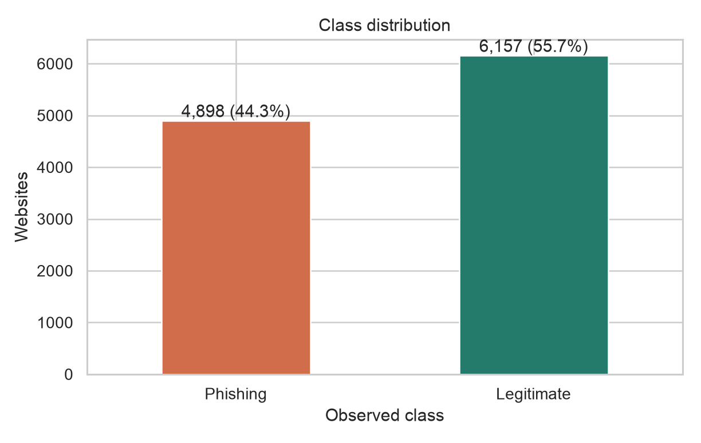
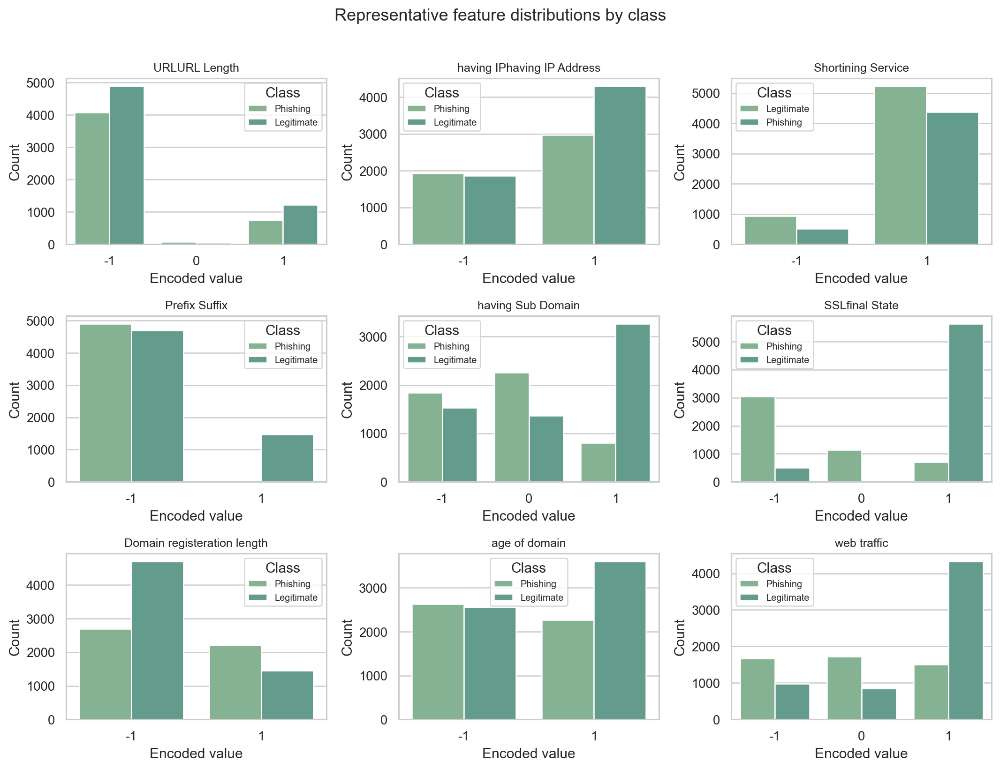
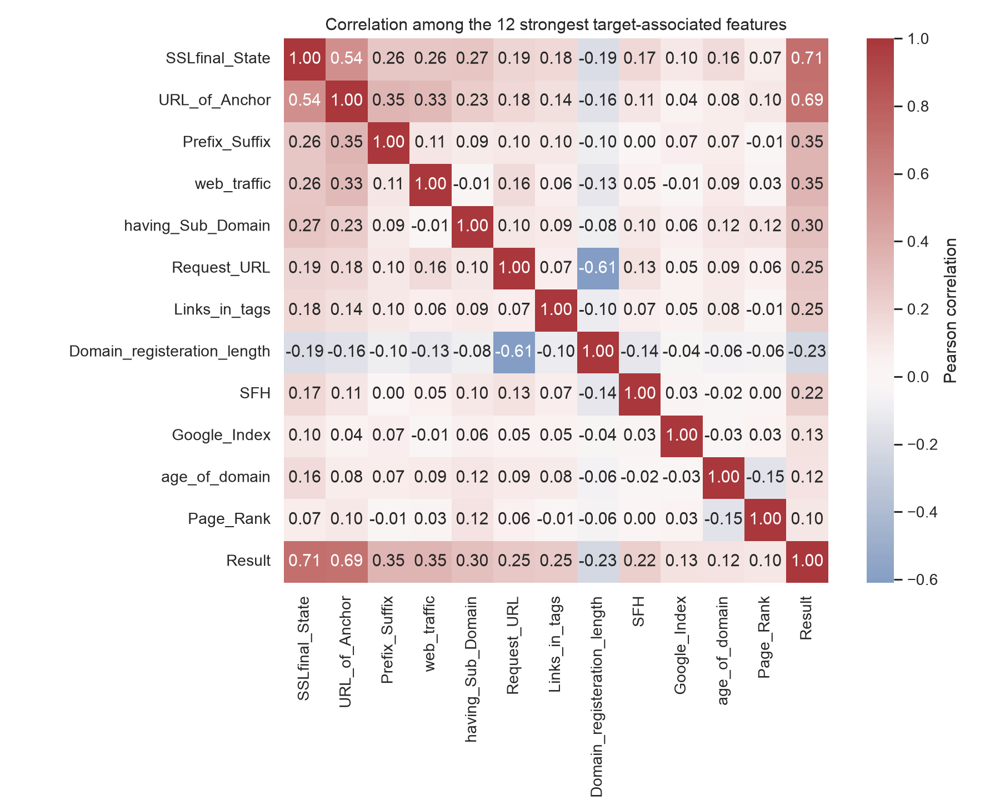
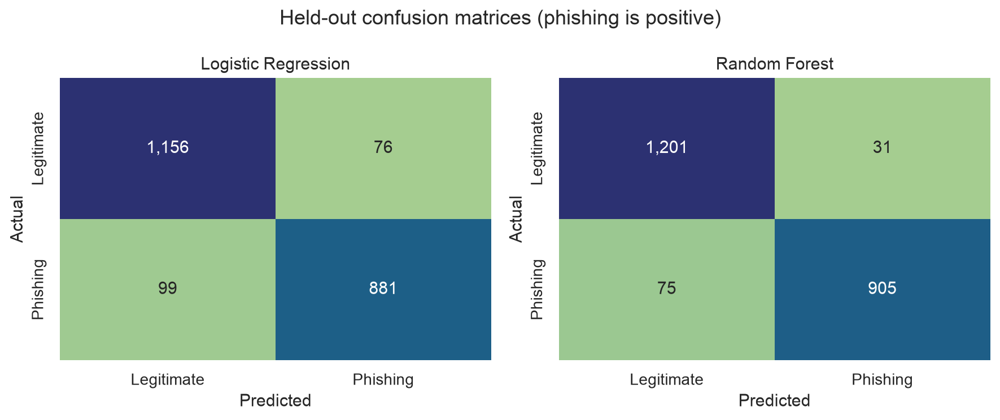
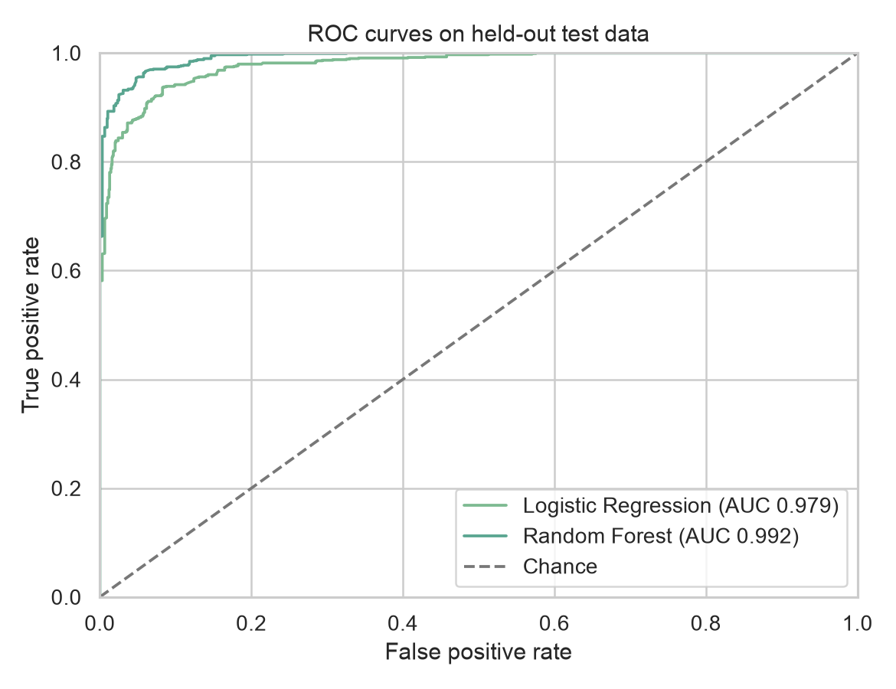
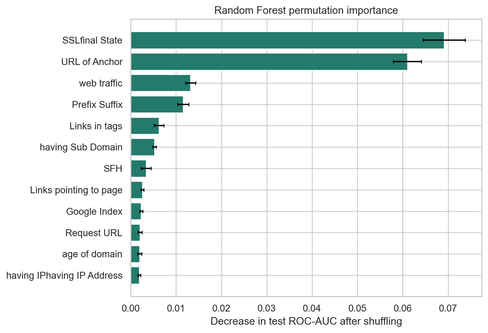

Phishing website detection
A reproducible comparison of Logistic Regression and Random Forest on engineered website indicators—with the costs of missed attacks and false alarms kept in view.
Research question
How well can Logistic Regression and Random Forest distinguish phishing from legitimate websites on unseen feature profiles, and what do their false positives and false negatives mean for a security workflow?
Finding: on the held-out grouped split, Random Forest reached 0.952 accuracy, 0.923 phishing recall, and 0.992 ROC-AUC. It still missed 75 phishing records. These are benchmark results, not a safety guarantee for live websites.
Dataset at a glance
Source: Akash Kumar, Phishing website dataset on Kaggle, a Kaggle mirror of the UCI Phishing Websites benchmark. Predictors cover URL structure, domain properties, certificate state, page links, and traffic indicators. `Result`: −1 phishing, +1 legitimate. The CSV includes a sequential index and 30 predictors plus the target; the index is dropped before modeling.
The target distribution is 4,898 phishing (44.3%) and 6,157 legitimate (55.7%). The file contains no missing cells. After removing the index, many feature profiles repeat, and 64 profiles have conflicting labels. As the data has no URL identity, those are retained rather than assumed to be duplicate sites. Identical profiles stay together in the grouped train/test split. See the feature dictionary for column definitions.



Preprocessing and methods
- Drop the sequential index; retain repeated feature profiles because sites cannot be identified from this data.
- Map phishing to the positive class. Use a stratified 5-fold grouped split (seed 42); the first fold is the approximately 80/20 evaluation set.
- Fit median imputation on the training fold. Standardize features for Logistic Regression; scaling is not needed for Random Forest. Use class weighting rather than synthetic resampling.
- Compare Logistic Regression as a linear baseline with a 400-tree Random Forest that captures nonlinear combinations.
Held-out evaluation
| Model | Accuracy | Precision | Recall | F1 | ROC-AUC | FPR | FNR |
|---|---|---|---|---|---|---|---|
| Logistic Regression | 0.921 | 0.921 | 0.899 | 0.910 | 0.979 | 0.062 | 0.101 |
| Random Forest | 0.952 | 0.967 | 0.923 | 0.945 | 0.992 | 0.025 | 0.077 |
Random Forest confusion counts: 1,201 legitimate correctly labeled, 31 legitimate flagged, 75 phishing missed, and 905 phishing detected. Logistic Regression: 1,156, 76, 99, and 881 respectively.



Security implications and limits
False negatives can allow credential theft or payment fraud; false positives can block legitimate services, waste analyst time, and contribute to warning fatigue. In this test, Random Forest missed 75 of 980 phishing records and flagged 31 of 1,232 legitimate records. That error profile might support analyst prioritization, but a live system needs current, source-separated data and a threshold matched to analyst capacity and user harm.
The benchmark is historical and static. It has no URL identity, timestamps, campaign IDs, source groups, or live page content. This experiment cannot identify which attack types are hardest, prove future generalization, or treat feature importance as causation. The model should prioritize review—not automatically declare a live site safe.